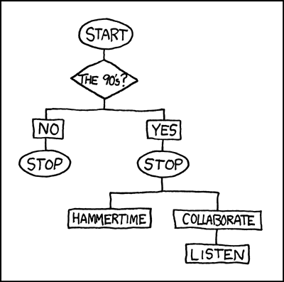

RSCTA
Text generation using Markov Chain
Markov Chain
Transition States based upon a transition matrix

Sentences as Markov Chain
I eat an apple. But, I can eat an orange too
I -> eat,can
P = 0.5
eat -> an P = 1
Inspiration
There is a relevant XKCD for everything

Source
Markov Approach
- Making a Trigram Tagger
- A Dictionary for a trigram pointing a new word
- Walking through the dictionary to generate new text
Example
"The quick brown fox jumps over the brown fox who is slow jumps over the brown fox who is dead."
{('The', 'quick'): ['brown'],
('brown', 'fox'): ['jumps', 'who', 'who'],
('fox', 'jumps'): ['over'],
('fox', 'who'): ['is', 'is'],
('is', 'slow'): ['jumps'],
('jumps', 'over'): ['the', 'the'],
('over', 'the'): ['brown', 'brown'],
('quick', 'brown'): ['fox'],
('slow', 'jumps'): ['over'],
('the', 'brown'): ['fox', 'fox'],
('who', 'is'): ['slow', 'dead.']}
Generating Triplets | Trigrams
def triples(self):
if len(self.words) < 3:
return
for i in range(len(self.words) - 2):
yield (self.words[i], self.words[i+1], self.words[i+2])
Getting Data | Scraping
import codecs
from bs4 import BeautifulSoup
from urlparse import urljoin
base_url = "https://www.musixmatch.com"
from urllib import urlopen
response = BeautifulSoup(urlopen(song_url),"lxml")
try:
lyric_body = response.find('span',{'id' : 'lyrics-html'})
if lyric_body is not None:
def get_lyrics(song_url):
return lyric_body.text.strip()
else:
return " "
except:
pass
def write_to_file(filename,content):
with codecs.open(filename,'a','utf8') as target:
target.write(content)
def download_lyrics(category_name):
category = category_name
response = BeautifulSoup(urlopen(urljoin(base_url,category)),"lxml")
songs_list = response.findAll('a',{'class' : 'title'})
for songs in songs_list:
print "Writing " + songs.text + " lyrics to file "
write_to_file(category.replace("/","") + ".txt" ,get_lyrics(urljoin(base_url,songs["href"])))
print "Wrote " + str(len(songs_list)) + " to file "
Generating text
- First Pass
- Second Pass
Second pass was necessary to get more entropy. So we made a markov engine that consumed output of previous one as output.
Second pass Generator
import pymarkov
import sys
import os
if len(sys.argv) < 3 :
print "Usage python double_markov.py input_file output_file "
sys.exit()
input_file = sys.argv[1]
output_file = sys.argv[2]
temp_file = "temp.txt"
first_pass = pymarkov.Markov(open(input_file))
temp_store = open(temp_file,"a") # Open in append mode
for el in xrange(0,50): #Train markov for 50 lines
temp_store.write(first_pass.generate_markov_text() + "\n")
temp_store.close() #Closes the buffer
## Perform a second pass
second_pass = pymarkov.Markov(open(temp_file))
final_store = open(output_file,"a") # Open in append mode
for el in xrange(0,50): #Train second markov for 50 lines
final_store.write(second_pass.generate_markov_text() + "\n")
final_store.close() #Writes the output
# Todo improve it to be cross platform
return_code = os.system("rm temp.txt")
if int(return_code) == 0:
print "Temporary files cleaned up successfully"
else:
print "Error cleaning up"
First Pass
Text wasn't as good and seemed less random.
of wine for the last thing I see fire Inside the pocket of your neck Down your shoulders and back We are surrounded by all these'
Second Pass
Text looked good and more randomish
across the sky me When no one else was ever behind me All these lights, they can't blind me With your love, nobody can drag down
Frequency distribution Bollywood | Pass 1
Frequency distribution Bollywood | Pass 2